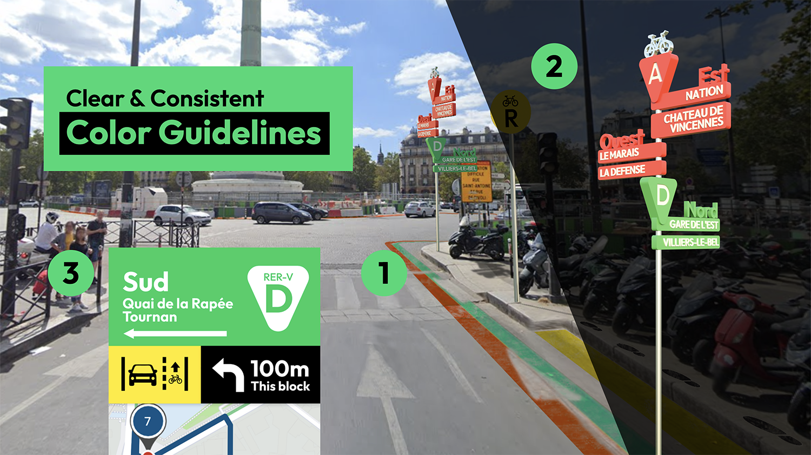

Redesigning the Public Bike Infrastructure of Paris
Primary Designer, 2023 SNU in Paris | Jul 2023
Introduction
During our 3-week stay in Paris as part of the SNU in Paris program, our team observed how the city, under the current government’s policy, had transformed into a major cycling hub. The public bike-sharing service, Velib’, proved to be an affordable and convenient mode of transportation, and we used it frequently. While it was a great experience, we also identified areas for improvement. With Paris preparing for the Olympics and expecting a surge of international visitors, we decided to undertake a project to analyze the usability of Paris's public bike infrastructure from the perspective of foreigners and propose potential enhancements.
Challenge
“How can we enhance the public bike infrastructure to create a more user-friendly and convenient experience for foreigners?”
Quick User Study
Think Aloud | As foreign visitors, we used the “Think Aloud” method with our teammates as research participants. Each participant documented their experience with the Velib’ system, starting from account creation to reaching various targeted destinations.
Observation | Each team member was assigned a specific location to observe riders and note any interesting aspects of the infrastructure or rider behaviors.
Quick Interview | Each team member also conducted interviews with two riders, asking about their usage patterns and opinions on their experiences.
Analysis | We performed thematic analysis on the qualitative data we collected to identify emerging themes and areas for improvement.
Quick Redesign of the Velib’ App and Display
We conducted quick prototyping of an improved version of the Velib' app and display, reflecting the user study analysis results.
To address the issue of low visibility of language settings and the lack of service explanations, such as the distinction between mechanical and electric bikes, the improved prototype includes introductory pages with language settings and a brief overview of the service.
To address the issue that subscription and pricing options are not easily visible or comparable at a glance, and the lack of explanation about the registration process (including card options and the fact that no deposit is charged at registration), the improved prototype redesigns the layout to make subscription options more visible and adds necessary explanations.
To resolve the issue that tutorials are not very visible due to their wording and location, the improved prototype simplifies the wording and guides users to read the tutorials after registration. It also provides clear instructions on entering the access code and PIN, which were major points of confusion for users. The registration page includes instructions to capture the access code and PIN for future use.
The map was enhanced with clearer fonts and larger icons, improving color contrast and size for better visibility during rides. It also includes information on which side of the road the bike lane is on and directions for the bicycle expressway. Additionally, riders can easily switch map modes with one tap, choosing which information to display and whether to show summarized or detailed data.
The main page was redesigned for a clearer layout and a more consistent design system. The availability forecast feature, previously hidden in settings, is now visible. The rent menu also includes a list of available docks, helping users quickly identify empty docks for bike returns without having to search through the entire list.
We also suggested improving the bike rating feature, which is currently only available on the app. Since Velib' bikes have their own display and keypad, we propose making the rating feature accessible directly on the bike. Additionally, by incorporating LEDs with color indicators, bike ratings can be more easily viewed at one glance.
Suggestions for Infrastructure Improvements
We visualized improvements for Place de la Bastille, one of the most confusing roundabouts, where connecting bike lanes are positioned in areas that are not easily visible at first glance.
We recommended establishing clear color guidelines:
- The road could be marked with a bicycle expressway symbol color line to indicate the direction of travel.
- Directional signs with the expressway symbol color, compass directions, and expressway destinations should be installed.
- The app should adopt the same consistent color guidelines and wording to help users easily correlate the road infrastructure with the app's navigation.
We also suggested installing bike rest areas where riders can comfortably wait at traffic lights or plan their routes. These rest areas would be clearly marked with yellow color and a rest area sign. The curbstone could double as a footrest for added comfort.